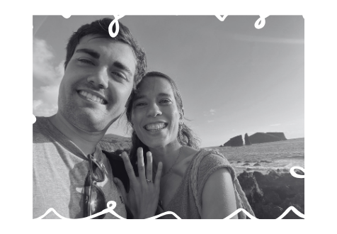
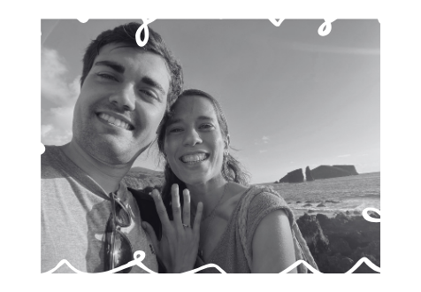

Alba y Guille
25 OCTUBRE 2025
VALLADOLID
¡BIENVENIDOS A NUESTRA BODA!
Después de más de 13 años juntos

 

¡Vamos a celebrarlo con las personas que más queremos!

UNA CELEBRACIÓN EN PLENAS TIERRAS CASTELLANAS
Dicen por ahí que los tesoros de la vida no están dentro de un cofre, sino que tienen forma de lugares, de momentos y de personas, y que debemos marcarlas con una X para saber dónde volver si alguna vez te encuentras perdido.
En nuestro caso, Castilla, tierra de pinares y viñedos, ha marcado nuestra vida y nuestra historia. Rodeados de pinares, acompañados de largos paseos y de mejores personas, hemos descubierto y brindado con vino las buenas comidas y momentos, creando poco a poco los lazos que hoy queremos juntar en nuestra boda. Esperamos que lo disfrutéis tanto como nosotros.

Wedding Itinerary

24/OCT • Rompehielos
Os esperamos a las 19:00 en el bar, donde disfrutaremos brindando juntos y comenzando la fiesta con toda la gente que queremos.
25/OCT • ¡La boda!
¡A prepararse todos para disfrutar del gran día! Os esperamos a las 12:30 en la iglesia de El Salvador, Simancas.
26/OCT • Pasar...
No hay plan... Tras el fiestón, ya solo queda pasar la resaca y pasar todas las fotos.
Os dejamos aquí un QR donde podéis compartirlas todas.
Iglesia
La ceremonia será a las 12:30 en la iglesia de El Salvador, Simancas.
El aparcamiento se encuentra un poco más abajo, en el helipuerto, junto a la plaza de toros de Simancas.
Celebracion
La celebración será en la Posada Real del Pinar, en Pozal de Gallinas.
Allí disfrutaremos de la verdadera tierra de pinares.
Servicio de autobuses
Habrá un servicio de autobuses tanto de ida como de vuelta.
Desde el centro de Valladolid (plaza Poniente) sale hacia la iglesia a las 11:45 h; os recomendamos estar 10 minutos antes.
Dentro del formulario podrás marcar los trayectos que necesites.
Vuestra presencia es lo que mas queremos
Confírmanos tu asistencia e indícanos si tienes alguna alergia o situación que debamos tener en cuenta, queremos que todos disfrutéis de este gran día!
Celebralo con nosotros
25 de octubre de 2025
GUILLE 638572659
ALBA 605010476